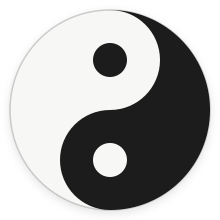

CorPath / 关于
关于 CorPath
CorPath = Core Path，核心之路。
这个名字代表两条路：一条是人生之路，记录经历之后的思考与感悟，以及实践之后的总结；一条是开发之路，记录技术、代码与工程中的探索、学习心得与思考。
两条路看似一内一外，其实你中有我、我中有你 —— 人生里处处需要开发，开发也从来不止于代码，它同样是在开发人生。如同两尾阴阳双鱼盘旋交错、相互环抱，看似分流，其实殊途同归，本就是同一条路：持续地想清楚，再往前走。这里是我把思考沉淀下来的地方，也是让它们成体系的地方。
